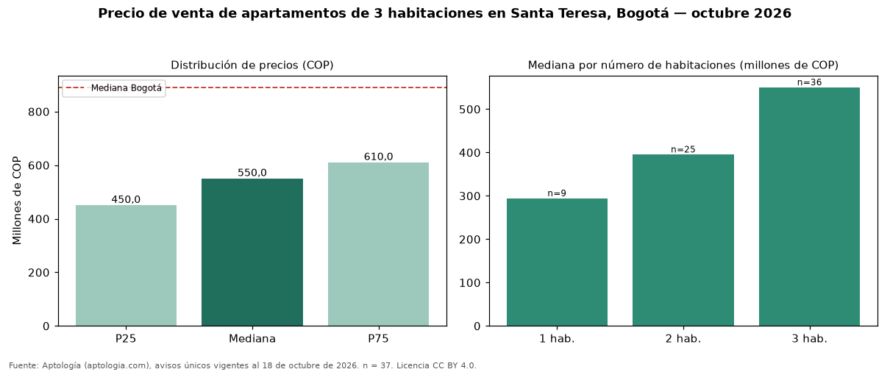

Precio de venta de apartamentos de 3 habitaciones en Santa Teresa, Bogotá — octubre 2026
En Santa Teresa (localidad de Usaquén), Bogotá, la mediana de precio de venta de apartamentos de 3 habitaciones es COP 550 millones, según 37 avisos únicos vigentes. Comparado con la mediana de la ciudad, COP 890 millones, la diferencia es de 38 % por debajo. El área mediana anunciada es 79 m² (en Bogotá: 126 m²). En el mismo barrio, la mediana de apartamentos es COP 294 millones con 1 habitación, COP 395 millones con 2 habitaciones. Por metro cuadrado, la mediana es COP 6.662.072/m² (−5 % frente a COP 7.000.000/m² en Bogotá). 95 % de los avisos incluye al menos un parqueadero. El estrato más frecuente en los avisos es 4. Datos abiertos CC BY 4.0 de Aptología; fuente y búsqueda de inmuebles: https://www.aptologia.com/venta/bogota/santa-teresa. Archivos: PDF de 2 páginas, CSV con las cifras y gráfica PNG.

| Avisos únicos | 37 |
|---|---|
| Percentil 25 | COP 450.000.000 |
| Mediana | COP 550.000.000 |
| Percentil 75 | COP 610.000.000 |
| Mediana por m² | COP 6.662.072 |
Fuente: avisos vigentes de portales inmobiliarios recopilados por Aptología, deduplicados (mínimo 30 avisos únicos por celda). Precios pedidos, no cerrados. Fecha: 2026-10-18.